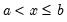
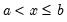

|
|
|
 is defined to be in the bin from to
is defined to be in the bin from to  if . The default is to use intervals closed on the left.
if . The default is to use intervals closed on the left. where
where  is the number of bins, where the 0 is reserved for NA encoding if “keepna” is specified; “left” – encode using the left-most value defining the bin; “right” – encode using the right-most value defining the bin; “mid” – encode using the midpoint of the bin.
is the number of bins, where the 0 is reserved for NA encoding if “keepna” is specified; “left” – encode using the left-most value defining the bin; “right” – encode using the right-most value defining the bin; “mid” – encode using the midpoint of the bin.